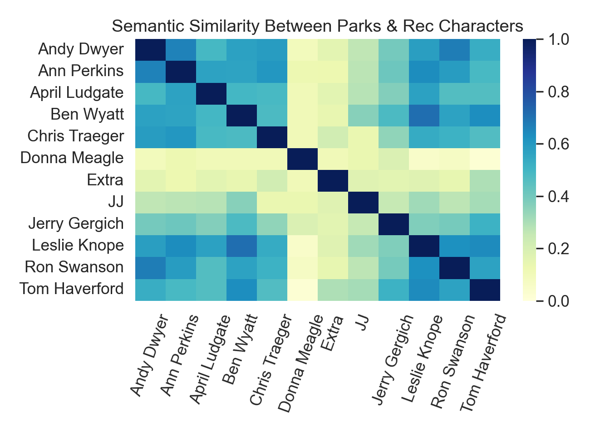

This page gives an example of how to analyze semantic similarity of text using Google’s pre-trained Universal Sentence Encoder (USE). In this example, I will be using transcribed dialogue from an episode of Parks & Recreation (Season 3, Episode 2 - “Flu Season”). I have two questions that I want to answer with this data example.
I’ll be using Python within RStudio to work with the USE. To do this, I first need to make sure some Python libraries are installed. I can do that within an R code chunk. Note: This demo includes both R and Python code chunks.
# R code chunk
library(tidyverse) # wrangling and plotting data
library(reticulate) # work between R and Python in RStudio
library(reactable) # nice tables
library(reactablefmtr) # format reactable tables
py_config() # make sure I'm using my intended python version
py_install("seaborn") # python data visualization library
py_install("tensorflow") # machine learning library
py_install("tensorflow_hub",pip=T) # repository of trained machine learning models
py_install("torch",pip=T) # machine learning and natural language processing libraryThe first thing I need to do is load some necessary libraries and load the pre-trained USE. This is available online here, but I just have a local copy that I’m calling.
# import necessary libraries
import tensorflow as tf
import tensorflow_hub as hub
import matplotlib.pyplot as plt
import numpy as np
import os
import pandas as pd
import re
import seaborn as sns
import torch
# get pre-trained USE
embed = hub.load("/hschmidt12.github.io/data/universal-sentence-encoder_4")I also need to load the data frame that contains the transcribed dialogue. This dataset is available on Kaggle here.
# read in episode transcription data
df = pd.read_csv("./data/PaR-s3e02.csv")
# show first 5 rows of data frame
df.head(5)## Character Line
## 0 Ann Perkins There is a crazy flu going around.
## 1 Ann Perkins Lots of miserable, dehydrated people with high...
## 2 Ann Perkins And one of those dehydrated, highfevered, mise...
## 3 Ann Perkins Who hates me.
## 4 April Ludgate I want another nurse.Once I load the data, I can see that I have two columns – Character which indicates the speaker of the dialogue and Line which tells me what the character said.
# save dialogue as new series
sentences = df.Line
# get list of unique speakers in this episode
speakers = df.Character.unique()
# alphabetize list of speakers
speakers.sort()
# print list of speakers
speakers ## array(['Andy Dwyer', 'Ann Perkins', 'April Ludgate', 'Ben Wyatt',
## 'Chris Traeger', 'Donna Meagle', 'Extra', 'JJ', 'Jerry Gergich',
## 'Leslie Knope', 'Ron Swanson', 'Tom Haverford'], dtype=object)Now it’s time to run the dialogue through the USE!
To answer my question about how semantically similar the characters in the episode are to one another, I need to make sure my data is formatted correctly. I need to concatenate all dialogue from the whole episode per speaker. For example, I would take every time Leslie spoke and put all that dialogue into one cell in a new data frame. I need to make sure each of those collections of dialogue are appropriately labeled with the correct speaker too.
Once I have all the dialogue concatenated, I can run the dialogue through my embed function. This function employs the USE and calculates what’s called an embedding. USE converts text into vectors in high-dimensional space (512 dimensions).
# loop through all speakers and save 1) just their dialogue and calculate 2) their word embeddings
speaker_dialogue = []
speaker_embedding = []
appended_dialogue = []
appended_embeddings =[]
for x in speakers:
print(x)
currentSpeaker = str(x)
# get only this current speaker's sentences from the whole episode
speaker = df[df["Character"] == currentSpeaker]
# concatenate all their sentences into one cell
currentDialogue = " ".join(speaker.Line)
currentDialogue = [currentDialogue]
# create data frame with all of speaker's dialogue in one cell
speaker_dialogue = {'Speaker':[currentSpeaker],
'Dialogue':[currentDialogue]}
speaker_dialogue = pd.DataFrame(speaker_dialogue)
# store dialogue in a list
appended_dialogue.append(speaker_dialogue)
# run embedding on all of this speaker's dialogue
speaker_embedding = embed(currentDialogue)
# store embeddings in a list
appended_embeddings.append(speaker_embedding)
# combine all speakers' dialogues into a new data frame
all_dialogue = pd.concat(appended_dialogue)
# combine all embeddings into one tensor shape (# of speakers X 512)
speakers_embedding = tf.concat((appended_embeddings),0)
else:
print("done!")## Andy Dwyer
## Ann Perkins
## April Ludgate
## Ben Wyatt
## Chris Traeger
## Donna Meagle
## Extra
## JJ
## Jerry Gergich
## Leslie Knope
## Ron Swanson
## Tom Haverford
## done!speakers = pd.DataFrame(speakers)
# save speaker list in a csv just so I can pull into R to make the correlation table later
speakers.to_csv('./data/speakers.csv')Now I have two data objects that I can use to understand how semantically similar each speaker is to every other speaker. The first object is all_dialogue, which is a data frame that contains each speaker’s name and all the dialogue they spoke during the episode. The second object is speakers_embedding, which is a Tensor. A Tensor is a multidimensional array of elements. In this case, I have a Tensor that contains a 1 x 512 array for each unique speaker (12 speakers).
Using these arrays, I can calculate the pairwise semantic similarity for each character using a correlation. These correlations represent how semantically similar or dissimilar two speakers are. Values range from 0, not at all similar, to 1, perfectly similar. The semantic similarity of two speakers’ dialogues can be computed as the inner product of the embeddings.
This will help me answer question 1: How semantically similar are the characters in this episode of Parks & Rec to each other?
# using np.inner, I calculate the inner product of vectors contained within the embedding arrays
# plot a heat map of similarity between speakers
def plot_similarity(labels, features, rotation): # labels = speakers, features = 512 scores, rotation = angle of text
corr = np.inner(features, features) # correlate 512 dimension scores across speakers
sns.set(font_scale=1.2)
g = sns.heatmap(
corr,
xticklabels=labels,
yticklabels=labels,
vmin=0,
vmax=1,
cmap="YlGnBu")
g.set_xticklabels(labels, rotation=rotation)
g.set_title("Semantic Similarity Between Parks & Rec Characters")
plt.tight_layout()
plt.show()
plot_similarity(all_dialogue['Speaker'],speakers_embedding, 70)
Blue cells indicate higher semantic similarity between speakers, while yellow squares indicate lower similarity. We can see that the majority of the main characters (those who work together in Pawnee’s City Hall) all tend to have greater semantic similarity with each other. On the other hand, JJ, the owner of the local diner, Donna Meagle, who also works in City Hall but does not have a large role in this episode, and the Extras in the episode all have much lower semantic similarity with the main characters.
Now to answer question 2: How semantically similar is Leslie Knope to her best friend, Ann Perkins?
We can see from the heat map that Leslie and Ann have a higher semantic similarity since they have a blue square. But, what exactly is that value? Well, I can save the correlation matrix values that are used to create the heat map and reformat the matrix into a table of correlation values that match the heat map.
# save correlation matrix as corr
corr = pd.DataFrame(np.inner(speakers_embedding, speakers_embedding))
# save matrix as a csv
corr.to_csv('./data/P&R-correlation-matrix.csv')# R code chunk
# read in correlation matrix csv
corr <- read.csv('./data/P&R-correlation-matrix.csv')
# delete first column of generated row numbers
corr <- corr[,-1]
# define column and row names based on heat map output
col.names <- c("Andy Dwyer","Ann Perkins","April Ludgate","Ben Wyatt","Chris Traeger",
"Donna Meagle","Extra","JJ","Jerry Gergich","Leslie Knope","Ron Swanson","Tom Haverford")
# row names are the same as column names
row.names <- col.names
# change row and column names
# we have twelve characters in this matrix
names(corr)[1:12] <- col.names
rownames(corr) <- row.names
# print table with cell highlights for Ann and Leslie
reactable(corr, compact = T, defaultPageSize = 12,
columns = list(
`Ann Perkins` = colDef(
style = cell_style(corr,
rows = 10,
font_color = "white",
background_color = "#FF6347")),
`Leslie Knope` = colDef(
style = cell_style(corr,
rows = 2,
font_color = "white",
background_color = "#FF6347"))))We can see that Leslie and Ann have a semantic similarity of 0.635, which is pretty high! Interestingly, this is Ann’s highest similarity with another character except for Andy, whom she used to date. And for Leslie, her highest similarity values are with Ann, her best friend, Ben, her romantic interest, and with Tom, a colleague that directly reports to her.
All together, these similarity values give us some valuable insight into the relationships between these characters!